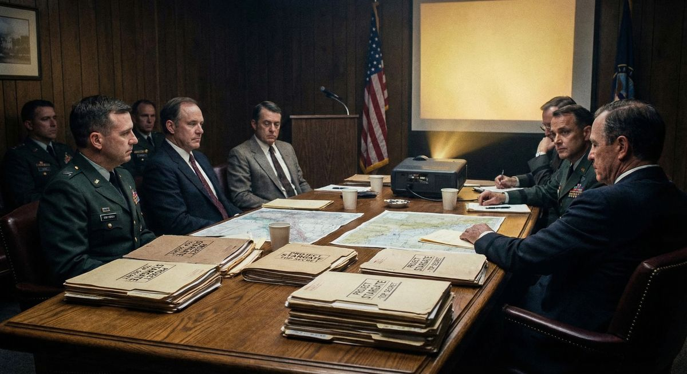

Skip Atwater spent a decade training Army intelligence officers to use remote viewing for classified operations. When he retired, he didn't disappear into obscurity — he became president of the Monroe Institute, one of the world's premier consciousness research facilities.
That career path isn't random. It tells us something important about what works in consciousness training and where the real institutional knowledge lives.
The Sugar Grove Incident
Before we get into Skip's background, let me tell you about the moment when military remote viewing became too credible to ignore.
Pat Price, one of the Stargate program's remote viewers, was given coordinates for a classified facility. He described the layout, the equipment inside, and — here's where it gets interesting — he read code names from files that were top secret.
The CIA and Navy launched a full leak investigation. They assumed someone had physically accessed the facility and fed Price the information. After ruling out every conventional explanation, they had to accept the truth: there was no leak. Pat Price had actually remote viewed it.
Think about what that means: The remote viewing was so accurate and detailed that trained intelligence officers refused to believe it was anything other than espionage. They investigated everyone who had access to the facility before they were willing to consider that remote viewing had actually worked.
This wasn't a parlor trick. This was operational intelligence at the highest classification levels.
Who Is Skip Atwater?
Skip Atwater wasn't some fringe researcher playing with pseudoscience. His credentials are about as mainstream as military intelligence gets:
- Counter Intelligence Special Agent during the Cold War
- Operations & Training Officer for Stargate (US Army's remote viewing program) for 10 years
- Recruited and trained elite intelligence officers for DoD and the National Intelligence Community
- Worked behind "the Green Door" at Fort Meade (the highest security clearance areas)
- Collaborated directly with Ingo Swann, Joe McMoneagle, Hal Puthoff, Russell Targ, and Kit Green (CIA)
After retiring from military intelligence, Skip became president of the Monroe Institute in Virginia — the same facility that developed the Gateway Experience and Hemi-Sync technology.
Why The Military Cared

The US Army didn't fund Stargate for over a decade because of mysticism or New Age beliefs. They funded it because of results:
- Stanford Research Institute (SRI) validation: SRI documented remote viewing under controlled scientific protocols and achieved 80% accuracy rates with trained viewers.
- Operational successes: Remote viewers located Soviet tank movements (verified by satellite), discovered classified facilities, identified underground bases, and provided intelligence the Pentagon acted on.
- Peer-reviewed research: Hal Puthoff and Russell Targ published their findings in Nature, IEEE, and other mainstream journals.
This wasn't belief-based. It was data-driven intelligence work.
The Monroe Institute Connection

Here's what makes Skip's career trajectory significant: he went from running military remote viewing operations to becoming president of the civilian training facility that aligned most closely with what actually worked in the field.
The Monroe Institute's approach emphasizes:
- Altered states of consciousness (Gateway Experience tapes, Hemi-Sync)
- Out-of-body experiences (which overlap significantly with remote viewing skills)
- Systematic training protocols for reproducible results
- Non-local consciousness as the theoretical foundation
Skip's path from Stargate to Monroe Institute president isn't just a career move — it's an institutional endorsement. The techniques that worked for Army intelligence are the same ones Monroe Institute has been refining for civilian use.
It's Not "Psychic Powers" — It's Quantum Non-Locality
One of the most important things Skip emphasizes in the interview is the theoretical framework for remote viewing. This isn't about ESP or supernatural abilities. It's about physics.
"There's no space and there's no time. Everything is everywhere, every when."
— Skip Atwater
At the quantum level, non-locality is proven. Entangled particles affect each other instantaneously regardless of distance. Skip's position — and the position of the physicists who worked on Stargate — is that consciousness can access this same non-local information field.
That's the difference between fringe pseudoscience and legitimate research. The DoD didn't fund Stargate because they believed in magic. They funded it because quantum physics suggests this should be possible, and the results proved it was.
What This Means For You
If you're interested in remote viewing or consciousness training, Skip Atwater's career path is a roadmap. The military figured out what works:
- Systematic training with clear protocols (not just "try to be psychic")
- Altered states of consciousness (meditation, Hemi-Sync, Gateway tapes)
- Trust-based training relationships between viewer and monitor
- Evaluation under controlled conditions to build confidence and skill
The fact that Skip went from Stargate to Monroe Institute tells you exactly where the real institutional knowledge lives. If you want to train like the military remote viewers did, that's where you start.
The Bigger Picture
The most fascinating thing about the Stargate program isn't just that it worked. It's that it worked well enough for the Department of Defense to fund it for over a decade, and when it ended, the people who ran it didn't go away. They transitioned to civilian research and training.
Skip Atwater is one example. Joe McMoneagle (the most decorated remote viewer) is still active, teaching and writing. Hal Puthoff went on to found the Institute for Advanced Studies at Austin and continues consciousness research. Russell Targ still teaches remote viewing workshops.
The knowledge didn't disappear when Stargate was officially shut down. It just moved.
And if you know where to look — Monroe Institute, SRI International, the published research, the declassified documents — you can access the same training methodologies that produced 80% accuracy rates in military intelligence operations.
Conclusion
Skip Atwater's journey from Cold War counterintelligence to Stargate operations to Monroe Institute president is a 30-year validation of one simple truth: consciousness training works, and the institutional knowledge for how to do it right exists.
The military proved it. Stanford Research Institute validated it. And Monroe Institute refined it for civilian use.
The question isn't whether remote viewing is real. The data settled that decades ago. The question is: are you willing to train systematically using proven methodologies, or are you going to keep waiting for someone to hand you psychic powers?
Because that's not how this works. It never was.
Source: This article is based on the Shawn Ryan Show Episode #154 featuring Skip Atwater (January 2, 2025). Full transcript analysis and additional research available in the Psionic Assist knowledge base.

Train Like Military Remote Viewers
Psionic Assist uses training methodologies validated by decades of military intelligence operations and consciousness research. Start your first session free.
Start Training →